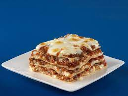
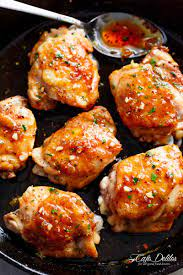

Lasagna

Description
It is known that making Lasagna can be time-consuming,
but the results are well worth the wait. Below, you
will find the ingredient list and step-by-step instruction
list for the recipe.
Ingredients
- 1 pound sweet Italian sausage
- ¾ pound lean ground beef
- ½ cup minced onion
- 2 cloves garlic, crushed
- 1 (28 ounce) can crushed tomatoes
- 2 (6.5 ounce) cans canned tomato sauce
- 2 (6 ounce) cans tomato paste
- ½ cup water
- 2 tablespoons white sugar
- 4 tablespoons chopped fresh parsley, divided
- 1 ½ teaspoons dried basil leaves
- 1 ½ teaspoons salt, divided, or to taste
- 1 teaspoon Italian seasoning
- ½ teaspoon fennel seeds
- ¼ teaspoon ground black pepper
- 12 lasagna noodles
- 16 ounces ricotta cheese
- 1 egg
- ¾ pound mozzarella cheese, sliced
- ¾ cup grated Parmesan cheese
Steps
- Cook sausage, ground beef, onion, and garlic in a
Dutch oven over medium heat until well browned. Stir
in crushed tomatoes, tomato sauce, tomato paste, and
water. Season with sugar, 2 tablespoons parsley, basil,
1 teaspoon salt, Italian seasoning, fennel seeds, and
pepper. Simmer, covered, for about 1 1/2 hours, stirring
occasionally.
- Bring a large pot of lightly salted water to a boil.
Cook lasagna noodles in boiling water for 8 to 10
minutes. Drain noodles, and rinse with cold water. In a
mixing bowl, combine ricotta cheese with egg, remaining
2 tablespoons parsley, and 1/2 teaspoon salt.
- Preheat the oven to 375 degrees F (190 degrees C).
- To assemble, spread 1 1/2 cups of meat sauce in the
bottom of a 9x13-inch baking dish. Arrange 6 noodles
lengthwise over meat sauce. Spread with 1/2 of the
ricotta cheese mixture. Top with 1/3 of the mozzarella
cheese slices. Spoon 1 1/2 cups meat sauce over
mozzarella, and sprinkle with 1/4 cup Parmesan cheese.
Repeat layers, and top with remaining mozzarella and
Parmesan cheese. Cover with foil: to prevent sticking,
either spray foil with cooking spray or make sure the foil
does not touch the cheese.
- Bake in the preheated oven for 25 minutes. Remove the
foil and bake for an additional 25 minutes.
Rest lasagna for 15 minutes before serving.
Honey Glazed Chicken

Description
This recipe is relevantly easy to make. It does not need a lot of ingredients and can be made in a few steps.
Ingredients
- ¼ cup honey
- 2 tablespoons soy sauce
- ⅛ teaspoon red pepper flakes
- 1 ½ tablespoons olive oil
- 2 skinless, boneless chicken breast halves, cut into bite-size pieces
Steps
- Whisk honey, soy sauce, and red pepper flakes in a bowl; set aside.
- Heat olive oil in a skillet over medium heat; cook and stir chicken in hot oil until lightly brown, about 5
minutes.
- Pour honey mixture into the skillet; continue to cook and stir until chicken is no longer pink in the center
and sauce is thickened, about 5 minutes more.
Sirloin Steak with Garlic Butter

Description
This sirloin steak recipe is served with very garlicky butter that makes this steak melt-in-your-mouth wonderful!
I have never tasted any other steak that came even close to this recipe. If you are having steak, don't skimp on
flavor to save a few calories.
Ingredients
- ½ cup butter
- 4 cloves garlic, minced
- 2 teaspoons garlic powder
- 4 pounds beef top sirloin steaks
- salt and pepper to taste
Steps
- Preheat an outdoor grill for high heat and lightly oil the grate.
- Melt butter in a small saucepan over medium-low heat; stir in minced garlic and garlic powder. Set aside.
- Season both sides of each steak with salt and pepper.
- Place steaks on preheated grill and cook 4 to 5 minutes per side. An instant-read thermometer inserted into
the center should read 140 degrees F (60 degrees C) for medium doneness.
- Transfer steaks to warmed plates; brush the tops liberally with garlic butter and allow to rest for 2 to 3
minutes before serving.